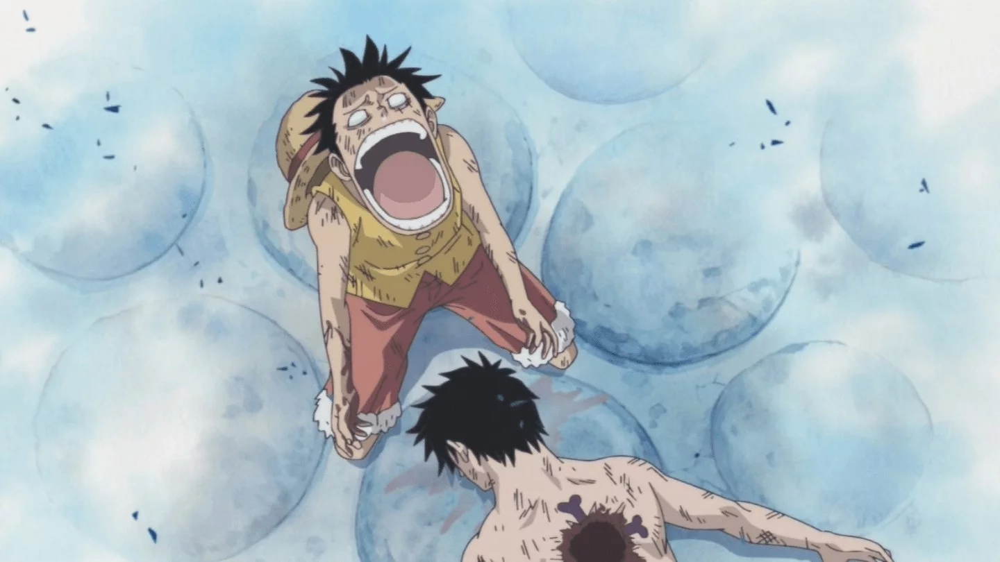
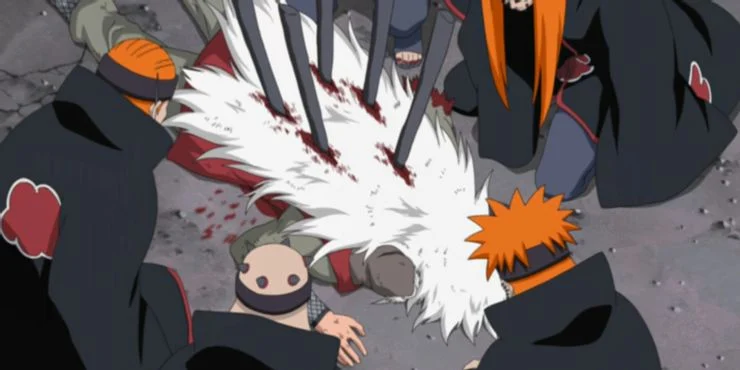
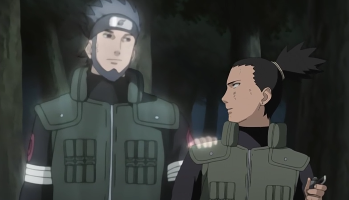
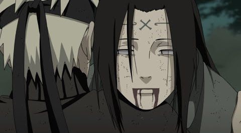
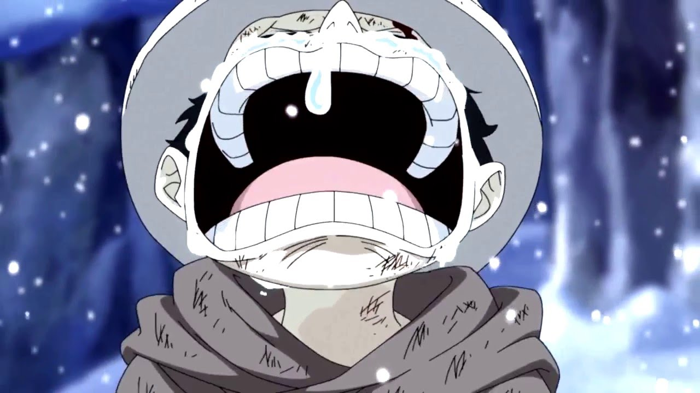
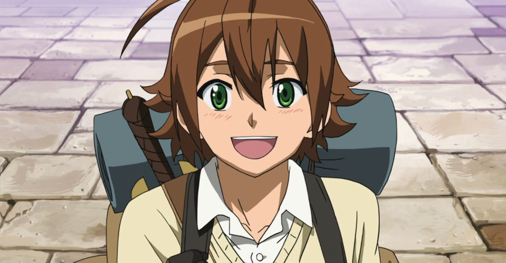
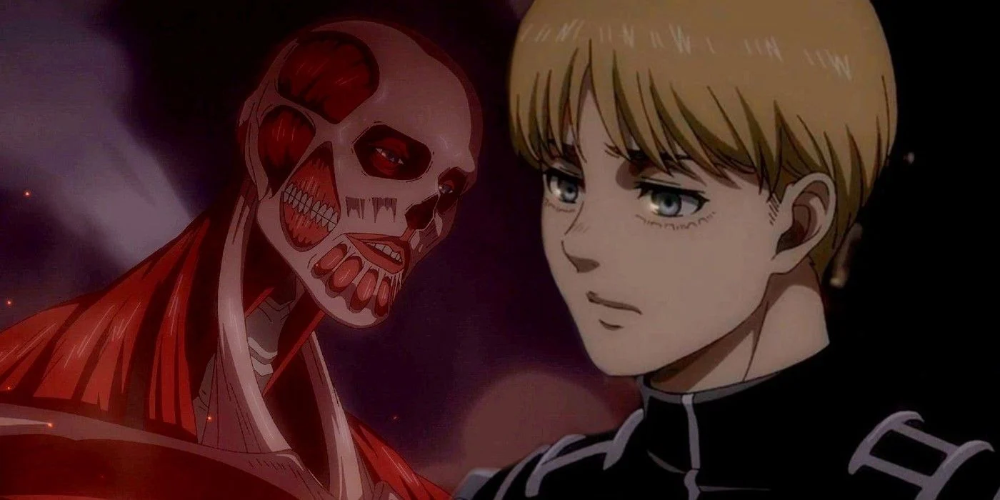

TOP 10 SADDEST THINGS IN ANIME WORLD
It's clear and certain that recently the anime community is growing faster than ever, people are willing to watch anime for ceverale purposes maybe because they want to learn Japanese, or they just want to explore the Japenese culture through anime, however what we know for a fact is that anime is entertaning.
Here are some more reasons for you to know why peaople are so into anime thes days on Quora.
1 - Ace death .

- Hunted by the World Government for his lineage, Ace was captured and sentenced to death, which resulted in the Summit War of Marineford, an all-out clash of powers; Whitebeard's forces against the Marines and Seven Warlords. Ace was freed, but he sacrificed his life to protect Luffy from Marine admiral Akainu. Ace's death ultimately proved to be the catalyst leading to Luffy training for two years to become strong enough to protect his friends, paving the way for the second half of the series.
2 - Luffy's grief about it .
- Luffy had a pretty intimate relationship with his brother Ace, especially because he oppened his eyes to this world with only his grandfather and no parents near him. He spend his whole childhood admiring and learning from his brother,that's why the fact that he saw his beloved Ace diying while defending him almost drove him crazy.
3 - Jiraiya's death .
- Jiraiya or Pervy Sage as Naruto used to call him, Jiraiya made his debut in the first season of the Naruto anime series and soon took the titular character under his wing. He played a huge part in molding the anime’s hero into a powerful ninja and was the first of Naruto’s mentors to attempt to teach him how to control his Nine-Tails power. Sadly Jiraiya's time was cut short in Naruto Shippuden as soon as he came face to face with "Pain" (Jairaiya's former student). During the battle "Pain" managed to severe Jairaiyaa's arm and crush his throat and finally kill him.
4 - Asuma's death
- Asuma Sarutobi Team 8 mentor, Asuma was killed while he was on a mission. He was killed by an immortal Akatsuki called "Hidan", who has the ability to connect with his opponent as soon as he touches the opponent's blood. Asuma was a very good teacher, friend, and mentor but Sadly his life came to an end leaving his smart student Shikamaru struggling to get over his death.
5 - Thors death .

-
Thors or the strongest gladiator on earth. In his days as a warrior, Thors was known to be a remorseless and cold warrior, fighting in Viking campaigns. Thors feared nothing, but this situation changed after he had his "Thorfinn" his reason to change. From then on he was known for his kind yet firm demeanor and humbleness. He was warm andloving toward his child Thorfinn and made sure to put him on the path to a peacful life. Thors remains standing despite being struck with ten of the archers' (what a honorable way to die for a gladiator).
6 - Neji's sacrifice .
- Neji died in the 4th Shinobi world war with a smile up on his face, he chosed to sacrifice his life for both Hinata and Naruto taking a Ten-Tails attack to the back. His death forsure helped Naruto and Hinata to get together, but it's still sad to see Neji's curse mark disappers.
7 - Law's miserable life .
- Law had it hard in life from his early days, he was born in "Flevance" or the "White city" as it was known, his parents, sister, friends and people were brutally killed, moreover he himself was supposed to die before reaching addulthood if only his beloved "Corazon" didn't save him by stealing the "Ope-Ope" devil fruit from a bunch of pirates and giving it to him . Just when things seems to be going well for Law something bad happens, his beloved Corazon was hunted and killed by "Doflamingo" who also wanted to have the power of the "Ope-Ope" devil fruit by his side.
8 - Tatsumi Sacrificing Himself To Save His City.
- Of all the deaths that occur during Akame Ga Kill, Tatsumi's probably hits the hardest. It's hard to say whether Tatsumi's final moments are so difficult to watch because Night Raid has lost so much already, or if it's because he's the main character and the one person who never needed to be wrapped up in the rebellion against the Empire. Whether he needed to step up or not, Tatsumi sacrifices everything to save the people of his city from the child emperor attacking them. His actions change the course of the world and help Night Raid achieve everything they set out to accomplish, even if it costs Tatsumi his life and his promise to Akame. Akame's despair at Tatsumi's decision only makes his final moments worse, ending the anime on an incredibly bittersweet note.
9 - Ash Lynx's death .

-
Ash Lynx is a gang leader who usually has allies at his side during just about every conflict with enemy gangs, but in his final moments, no one is with him. While he's walking down the street, he's stabbed by an individual who didn't realize that their respective gangs were now on peaceful terms. Rather than try to go to the hospital or contact someone to help him, he drags himself into the public library and expires in his seat.
10 - Levi Ackerman Chose Not To Save His Friend In "Attack On Titan" .
- After a long battle against the Titans from Marley, the Survey Corps are left nearly destroyed. Two key members, "Erwin Smith" and "Armin Arlelt", are both on the verge of passing away. Only one thing can save them: an injection of Titan serum. But there's only enough for one person, and a choice must be made. Levi has a long history with Erwin, and cares about him deeply. What's more, he's their commander. But ultimately, he hardly chooses Armin, both because Levi believed that Erwin had done enough for the Corps and deserved to rest, and because Armin's strategic mind and genius was something they needed for the future. So, he made the difficult decision to say goodbye to his oldest friend, and save Armin's life.